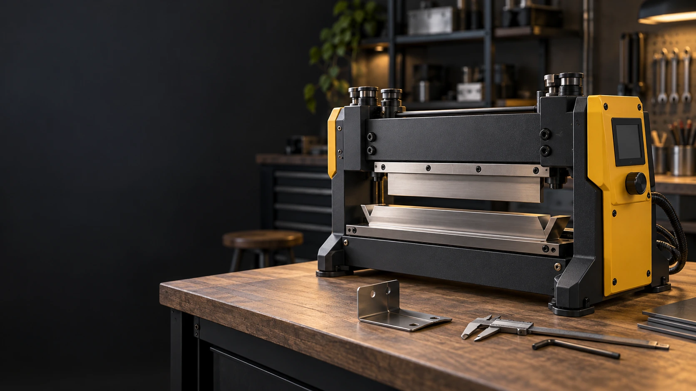
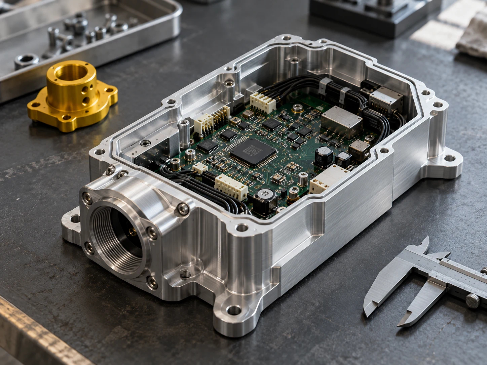

Ascoltiamo.
Entriamo nel tuo contesto, individuiamo il problema e definiamo insieme obiettivi e vincoli.
ANALISI & FATTIBILITÀ
La precisione della meccanica.
L’intelligenza del software. Il potenziale dell’AI.
Insieme, per far evolvere la tua impresa.
Progettazione meccanica e sviluppo di prodotto.
Dall’esigenza al primo prototipo.
Hardware, software e integrazione.
Un unico sistema, pensato per funzionare.
IoT, dati e intelligenza artificiale.
Macchine che dialogano, informazioni che servono.

Crediamo che le idee migliori nascano dove le competenze si incontrano.
Samera unisce progettazione meccanica e informatica per dare vita a prodotti di nicchia connessi. Soluzioni ad alta tecnologia, costruite attorno a problemi reali delle piccole e medie imprese.
Partiamo dal lavoro di ogni giorno: un processo da semplificare, una macchina da migliorare, un dato da rendere utile. E trasformiamo quella sfida in un progetto concreto.
Dall’intuizione alla realizzazioneOgni PMI ha sfide specifiche.
Esplora alcuni ambiti in cui meccanica,
software e dati possono fare la differenza.
Ambiti applicativi da esplorare insieme. Ogni soluzione nasce dall’analisi del tuo contesto.
L’AI diventa utile quando entra nei processi reali. La integriamo nel progetto per interpretare dati, riconoscere anomalie e supportare le decisioni delle persone.
Troviamo il suo posto nella tua impresa ↗Un percorso condiviso, dal primo confronto
alla soluzione. Con la stessa attenzione
al dettaglio, a ogni passaggio.
Entriamo nel tuo contesto, individuiamo il problema e definiamo insieme obiettivi e vincoli.
ANALISI & FATTIBILITÀDisegniamo la soluzione facendo dialogare meccanica, elettronica e architettura software.
DESIGN & INGEGNERIATrasformiamo il progetto in un prototipo, lo testiamo e lo miglioriamo con il tuo riscontro.
SVILUPPO & VALIDAZIONEIntegriamo il prodotto nel tuo ambiente di lavoro e definiamo come farlo evolvere.
INTEGRAZIONE & EVOLUZIONEUna macchina da connettere? Un’idea di prodotto?
Un processo che potrebbe funzionare meglio?
Mettiamo a fuoco il punto di partenza.
Prepara un breve riepilogo da condividere con il team Samera.